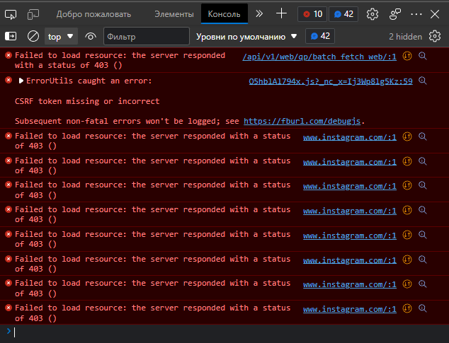

Тип настройки:prostoVPN
Тип проблемы: не работает кнопка “Далее”
Что с сайтом: на странице регистрации, при нажатии кнопки “далее” ничего не происходит
Используемый браузер: opera
Собственно нужен Инстаграм, но зарегистрироваться не получается, нужна помощь.


Хорошо бы посмотреть вкладку “Сеть”.
Но лучше регистрироваться через мобильное приложение. Если регистрироваться на десктопе через VPN, то скорее всего будет теневой бан (телефонный номер вероятно уже непригоден). После мобильного приложения можно потом авторизоваться на компьютере в VPN. Хотя, я регился во времена до блокировок. После этого не чищу куки. И то один раз меня выбило, еле еле зашел, подтвердив через SMS, думал уже забанили.
Это тогда, когда все сообщества стали недоступны (типа не существуют все, usabilty отпад). А они просто изменили лицензионное соглашение и пришлось чистить куки и заново входить на десктопе, подтверждать соглашение (это уже когда блокировки были). В общем, весело. А вы хотите регистрироваться на десктопе через VPN… Удачи.
Кстати, во вконтакте такой же теневой бан был при регистрации на компе. Пришлось тоже через мобильное приложение. Я так полагаю это из-за грязного IP. А на десктопе, где Ростелеком статика всё регится без проблем.
Успешно зарегался через мобильную версию, но на ПК всё ещё не пускает, пишет “CSRF token missing or incorrect”. Хотите сказать что чистка куки может помочь с авторизацией?
Вот вкладка с сетью, как я понял (возможно) моё местоположение определяется и не пускает, я хз.

Вы прислали пустую вкладку “сеть”.
Попробуйте следовать этому руководству: https://github.com/anticensority/runet-censorship-bypass/wiki/Чиним-сайты-со-сломанными-элементами#через-инструменты-разработчика-в-браузере-devtools.
Opera

Microsoft Edge

Красные записи – это запросы, завершившиеся ошибкой.
Для удобства можно отсортировать запросы по состоянию-статусу, чтобы все красные записи были в одном вместе.
batch_fetch_web имеет статус 403 (запрещено, forbidden).
Имеет смысл попробовать добавить его в исключения (исключить из проксируемых или наоборот – добавить).
Добавьте в шапку таблицы колонку domain name (доменное имя).
Посмотрите более детально ответ batch_fetch_web (кликните по нему для получения деталей).


{kind=link}
Я не знаю как исключить запрос из проксируемых
Block request URL?
Я тоже не знаю, как это сделать в VPN. Знаю, что можно сделать в расширениях типа https://censortracker.org или в GitHub - anticensority/runet-censorship-bypass: Chromium extension for bypassing censorship in Russia (см.док.на Home · anticensority/runet-censorship-bypass Wiki · GitHub).
Домен запроса с ошибкой – на instagram.com. Внести его в исключения не выйдет, т.к. этот домен отвечает за весь сайт.
Выходит что и с PAC файлом ничего не получится? Что делать то тогда?
Значит, вы уже зарегились, но войти в аккаунт не получается? (а не тот ли это теневой бан?)
Попробуйте авторизоваться через другой VPN, у которого более “чистый” IP. Авторизация запомнится в куках, а потом уже можно попробовать VPN’ы менять. Но может и не получиться, если IP antizapret’а в бане.
Я зарегистрировался и на телефоне всё работает, причём с того же впн и конфига, но с другим протоколом (TCP). А вот на ПК не даёт проходу с любого впн и прокси. Я понимаю что х*й бы с ним раз на телефоне пашет, но мне он нужен на ПК для удобства работы, а то приходится юзать облачные диски для передачи файлов между ПК и смартфоном, что бредово.
К слову куки чистил, но только инстаграмовские.
Наоборот, куки не надо бы чистить. Авторизуйтесь с помощью другого VPN, авторизация запомнится в куках, а потом пробуйте зайти через антизапрет. Может, получится.
Тогда надо искать непалевный VPN для первоначальной авторизации. В vpngate среди новых такие встречаются, попробуйте украинские, например (иногда бывают).
Пишут, что инстаграму достаточно смены юзер-агента, чтобы воспринимал десктоп браузер как мобильный клиент.
Ок, нашёл решение проблемы с CSRF токеном. Нужно прописать данную строку в консоль web-инспектора и всё заработает.
n=new Date;t=n.getTime();et=t+36E9;n.setTime(et);document.cookie='csrftoken='+document.body.innerHTML.split('csrf_token')[1].split('\\"')[2]+';path=\;domain=.instagram.com;expires='+n.toUTCString();
(Как закрывать темы или обозначать ответы я не знаю, так что сделайте кто нибудь это за меня  )
)
Да и заголовок следует изменить на что-то более подходящее, но кнопка редактирования пропала, либо я её не вижу.